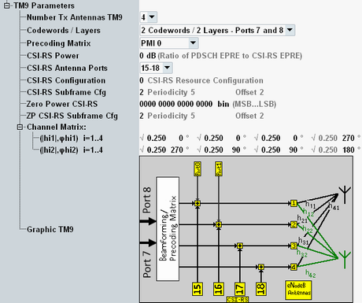

This section is displayed for transmission mode 9.

Selects the number of downlink TX antennas. The allowed values depend on the selected scenario.
For four TX antennas, option R&S CMW-KS521 or -KS540 is required.
For eight TX antennas, option R&S CMW-KS522 is required.
Remote command:For MIMO nx2, you can select between one and two layers. For MIMO nx4, you can select between one, two and four layers.
The used ports are fixed and indicated.
Remote command:For transmission mode 9 with 8 TX antennas, the precoding matrix is selected via two PMI values.
The parameter "Precoding Matrix" selects the first value, see "Precoding Matrix". The additional parameter "Precoding Matrix 2" selects the second value.
The meaning of the PMI values is defined in 3GPP TS 36.213, section 7.2.4.
Remote command:Value Pc to be signaled to the UE. Pc is the assumed ratio of the RS EPRE to the CSI-RS EPRE. To increase the CSI-RS power, decrease the setting.
The used CSI-RS power offset can be different from the signaled value. For configuration of the used CSI-RS power offset, see "CSI-RS".
Remote command:Selects the antenna ports used for the CSI-RS. Select "None" to transmit no CSI-RS at all.
- 2 or 8 TX antennas: All values are allowed.
- 4 TX antennas: Up to 4 ports are allowed.
- If a scheduling type with follow PMI or follow RI or follow CQI is active, the number of CSI-RS antenna ports equals the number of TX antennas. You cannot configure this setting in that case.
For four antenna ports, option R&S CMW-KS521 or -KS540 is required.
For eight antenna ports, option R&S CMW-KS522 is required.
Remote command:Selects the CSI reference signal configuration, influencing which resource elements are used for CSI-RS within a subframe.
The allowed values depend on the duplex mode, the cyclic prefix and the number of CSI-RS antenna ports.
The values are specified in 3GPP TS 36.211, table 6.10.5.2-1 and table 6.10.5.2-2.
Remote command:The CSI-RS subframe configuration (ICSI-RS) determines in which subframes the CSI-RS is transmitted.
The selected value determines the periodicity (TCSI-RS) and the subframe offset (ΔCSI-RS). Both values are displayed for information.
The mapping is defined in 3GPP TS 36.211, section 6.10.5.3.
Remote command:The 16-bit pattern is signaled to the UE and indicates for which CSI-RS configurations the UE must assume zero transmission power. In resource elements with zero transmission power, there is no downlink transmission at all - no CSI-RS and no PDSCH.
Bit value 1 means zero transmission power. For details, see 3GPP TS 36.211, section 6.10.5.2.
For FDD plus normal cyclic prefix, the last 6 bits are always 0. For FDD plus extended cyclic prefix, the last 8 bits are always 0.
Remote command:Selects the subframe configuration for zero power CSI-RS, similar as parameter "CSI-RS Subframe Cfg" for non-zero power CSI-RS.
Remote command:The matrix defines the radio channel coefficients, see "Radio Channel Coefficients for MIMO".
The size of the matrix depends on the number of TX antennas. Each element of the matrix is a complex number, defined via its phase and its magnitude.
You can configure the phase of each number. And you can configure the square of the magnitude of all but one number in each matrix line. The magnitude of the last number is adapted automatically, so that the sum of all magnitude squares within each line of the matrix equals 1.
The channel matrix settings are hidden for fading scenarios and for scenarios with RF output before the radio channel.
For the 4x4 matrix, you can select a predefined matrix instead of configuring your own matrix (parameter "Matrix Selection").
Remote command:Plus corresponding PCC commands.